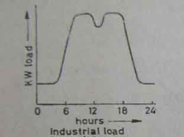
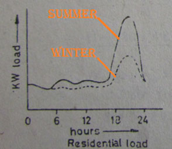

Load Curve
A graphical plot showing the variation in demand for energy of the consumers on a source of supply with respect to time is known as the load curve.
If this curve is plotted over a time period of 24 hours, it is known as daily load curve . If its plotted for a week, month, or a year, then its named as the weekly, monthly or yearly load curve respectively.
The load duration curve reflects the activity of a population quite accurately with respect to electrical power consumption over a given period of time. To understand the concept better its important that we take the real life example of load distribution for an industrial load and a residential load, and have a case study on them, to be able to appreciate its utility from the perspective of an electrical engineer.
Case Study on Daily Industrial Load Curve.
The figure given below shows the load duration curve of an industrial load over a period of 24 hours. A closer introspection into the curve shows that the load demand starts to rise only after 5 hours in morning as some of the machinery in the plant starts running perhaps for warming prior to operation of a few departments having to start early to synchronise the overall working of the plant in proper manner. By 8 hours in morning, the entire industrial load comes into play and remains constant up to shortly before noon, when it begins to fall off a bit because of lunch period. The morning shape of the curve, is again restored from around 14 hrs and remains like that till about 18 hrs. In evening, most of the machineries start to shut down. Demand falls to minimum again by 21 to 22 hours in night and remains the same till 5 hours in morning next day. The same process is repeated over a period of 24 hours.

Case study on Daily Residential Load Curve.
In case of a residential load, as we can see from the diagram below, the minimum load is reached at about 2 to 3 hours at morning, when most people are asleep and during 12 noon, when most people are out at work. Whereas, the peak of the residential load demand starts at around 17 hrs and lasts upto 21 to 22 hrs at night, after which again the load drops rapidly, as most people retire to bed. Since, this residential load curve, is taken in a sub-continental continental country like India, we see that the load demand in summer is a bit higher in summer (shown in bold line) compared to a similar pattern of lower values during the winter season (shown in dotted line).

From the above to examples we see, that the load duration curve, gives us a graphical representation, of the demand that the supply stations are required to meet throughout the day. And hence they are helpful in deciding the total installed capacity of the plant required, which should be capable of meeting the peak load demand, and the most economical size of various generating units. Most importantly it helps us decide the operating schedule of the power plant, i.e. how, when and in what sequence, the various units should be started, run and shut down. During, the valley period (at lower load demand) the question of shutting down some generator sets and restarting them later on, when more load comes on is to be decided by economic considerations.
To shut down the generator sets and to restart them later involves certain losses on one hand and on the other hand to allow the sets to run at partial loads also involve losses due to loss of efficiency of operation which depends upon the time duration for which the sets are run at reduced load.
The decision on whether to shut down certain sets or continue their operation at reduced load is to be made in the light of minimum losses. These analyses are done by power sector engineers taking the load duration curve of their supply targets into consideration. Hence it is important that the raw data be taken in form of a load curve and implemented, to optimize the power generating units, in the most efficient manner possible.
 by
by